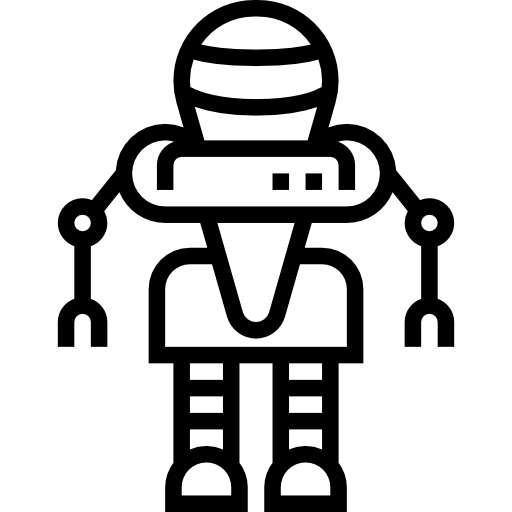

La materialización de una idea requiere de un prototipo


- 
A lo largo de la historia, artesanos y artistas han utilizado prototipos de arcilla, cera y otros materiales para planificar y perfeccionar sus obras antes de realizar la versión final.
Los ingenieros y diseñadores comenzaron a utilizar prototipos de metal y madera para probar y optimizar máquinas y dispositivos antes de su producción en masa.
El prototipado se convirtió en una parte fundamental del desarrollo de tecnología espacial.
La industria de la informática y la programación desarrolló metodologías para el prototipado de software.
Se comenzaron a crear prototipos de productos para obtener retroalimentación temprana de los usuarios ("diseño centrado en el usuario").
Se desarrollaron tecnologías de prototipado rápido (como la impresión 3D) que permitían la creación rápida de prototipos físicos a partir de modelos digitales.
El diseño de experiencia de usuario (UX) se convirtió en una disciplina importante en el diseño de software y productos digitales.
“Una de las estadísticas más tristes de la experiencia UX es que sólo el 1% de los compradores online están satisfechos con los sitios web de comercio electrónico con los que interactúan. Esta puede ser la razón por la que el 53% de los usuarios de dispositivos móviles dicen que abandonan sitios web que no cumplen con sus expectativas en 3 segundos o menos. Desafortunadamente, la mayoría de las páginas web tardan aún más en cargarse, lo que puede provocar conversiones y pérdida de tráfico.” (Revista Forbes, 2023).
(Revista Forbes, 2023)
contáctanos en el siguiente enlace, cuéntanos de tu duda y nos pondremos en contacto a la brevedad
Solicitar Informes